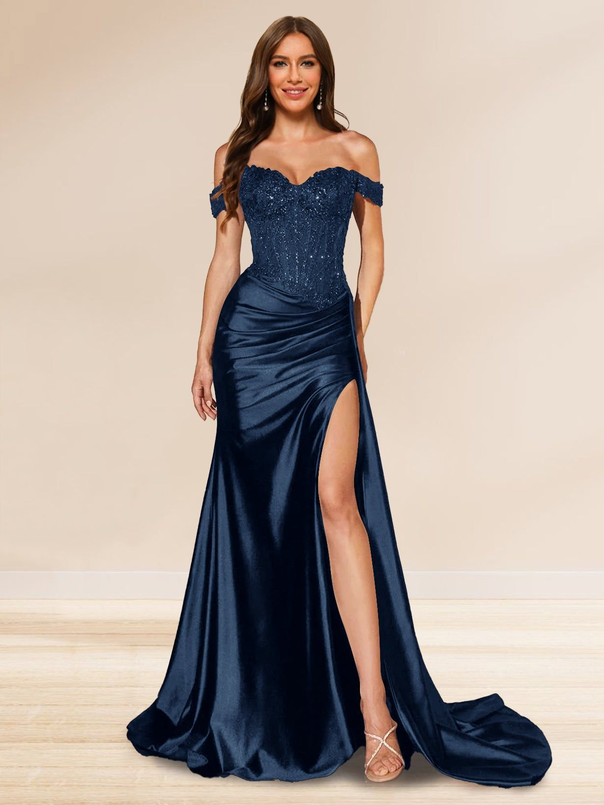
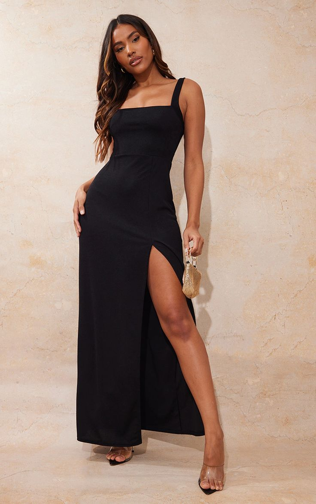
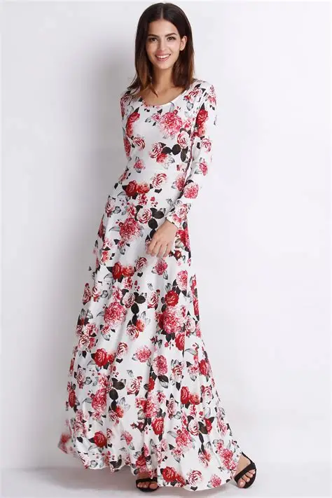

Dresses represent elegance and confidence. From long evening gowns to summer floral dresses, they are perfect for many occasions. Dresses can make someone feel powerful, stylish, and sophisticated.
The choice of fabric, colour, and design can completely change the mood of a dress. A black dress may look bold and classy, while pastel tones can feel soft and romantic.


